# Libraries
library(readxl)
library(stringr)
library(arules)
library(arulesViz)
library(ggplot2)
library(dplyr)
library(plotly)
library(pryr)
# Path
path <- "~/Downloads/"
# Helper function
calculate_memory_used <- function(profile_file) {
output <- readLines(profile_file) # this reads the log created by the profile
# filter lines to keep only those that start with a number and obtain bytes data
memory_allocations <- as.numeric(sub(":.*", "", output[grep("^[0-9]", output)]))
# sum the memory allocations and convert to MiB
total_memory_used <- sum(memory_allocations, na.rm = TRUE) / (1024^2) # 1024 bytes = 1KiB, 1024KiB = 1MB
return(total_memory_used)
}Lab 7 - Unsupervised Learning – Pattern Mining
Setup
Libraries & Paths
1. Load & Cleanse Data
spotify <- read_excel(paste0(path, "spotify_dataset-1.xlsx"))
structure(spotify)# A tibble: 1,048,575 × 4
user_id artist track playlist
<chr> <chr> <chr> <chr>
1 9cc0cfd4d7d7885102480dd99e7a90d6 Elvis Costello (The… HARD RO…
2 9cc0cfd4d7d7885102480dd99e7a90d6 Elvis Costello & The Attract… (Wha… HARD RO…
3 9cc0cfd4d7d7885102480dd99e7a90d6 Tiffany Page 7 Ye… HARD RO…
4 9cc0cfd4d7d7885102480dd99e7a90d6 Elvis Costello & The Attract… Acci… HARD RO…
5 9cc0cfd4d7d7885102480dd99e7a90d6 Elvis Costello Alis… HARD RO…
6 9cc0cfd4d7d7885102480dd99e7a90d6 Lissie All … HARD RO…
7 9cc0cfd4d7d7885102480dd99e7a90d6 Paul McCartney Band… HARD RO…
8 9cc0cfd4d7d7885102480dd99e7a90d6 Joe Echo Beau… HARD RO…
9 9cc0cfd4d7d7885102480dd99e7a90d6 Paul McCartney Blac… HARD RO…
10 9cc0cfd4d7d7885102480dd99e7a90d6 Lissie Brig… HARD RO…
# ℹ 1,048,565 more rowsObservations
After reviewing the structure and data types, I have determined that char types are acceptable for all 4 features.
dim(spotify)[1] 1048575 42. Data Cleaning
print(sum(duplicated(spotify)))[1] 169print(colSums(is.na(spotify)) / nrow(spotify) * 100) user_id artist track playlist
0.000000000 0.209999285 0.003528598 0.066471163 # Negligible
spotify <- na.omit(spotify)
spotify <- spotify[!duplicated(spotify), ]
spotify <- spotify[!str_detect(spotify$track, "Intro|intro"), ]
spotify <- spotify[!str_detect(spotify$track, "Outro|outro"), ]
spotify <- spotify[!str_detect(spotify$track, "[^A-Za-z0-9 '-()/&]"), ]
spotify <- spotify[!str_detect(spotify$artist, "[^A-Za-z0-9 '-()/&]"), ]
dim(spotify)[1] 742074 4head(spotify)# A tibble: 6 × 4
user_id artist track playlist
<chr> <chr> <chr> <chr>
1 9cc0cfd4d7d7885102480dd99e7a90d6 Elvis Costello (The… HARD RO…
2 9cc0cfd4d7d7885102480dd99e7a90d6 Tiffany Page 7 Ye… HARD RO…
3 9cc0cfd4d7d7885102480dd99e7a90d6 Elvis Costello & The Attracti… Acci… HARD RO…
4 9cc0cfd4d7d7885102480dd99e7a90d6 Elvis Costello Alis… HARD RO…
5 9cc0cfd4d7d7885102480dd99e7a90d6 Lissie All … HARD RO…
6 9cc0cfd4d7d7885102480dd99e7a90d6 Paul McCartney Band… HARD RO…Risks
There are unique over-filtering and under-filtering in market basket analysis. Both can have a substantial negative impact on the final patterns uncovered. Over-filtering can occur when too much data is taken out by means of eliminating instances of seemingly irrelevant data. Assuming a certain type of data can be ruled out can lead to missing important niche patterns. Under-filtering happens when the set is bloated with data that doesn’t help. This can lead to overcomplexity
3. Transaction Construction
Unit of analysis
I chose user_id for this analysis. My inference is that suggestions based on the listener are more commonly needed than suggestions for the playlist. From a business standpoint, I believe the customer comes first. People are often more interested in their personal recommendations. Also, playlist suggestions can and should depend on the user.
# track
group_tracks <- split(x=spotify$track,
f=spotify$user_id)
Trx_tracks <- as(object = group_tracks,
Class = 'transactions')
# artist
group_artists <- split(x=spotify$artist,
f=spotify$user_id)
Trx_artists <- as(object = group_artists,
Class = 'transactions')
# track_artist
spotify$track_artist <- str_c(spotify$track, spotify$artist, sep = "_")
group_track_artist <- split(x=spotify$track_artist,
f=spotify$user_id)
Trx_track_artist <- as(object = group_track_artist,
Class = 'transactions')4. EDA
# viz top 10 tracks
itemFrequencyPlot(Trx_tracks,
topN = 10,
type = 'absolute',
ylim = c(0,300)
)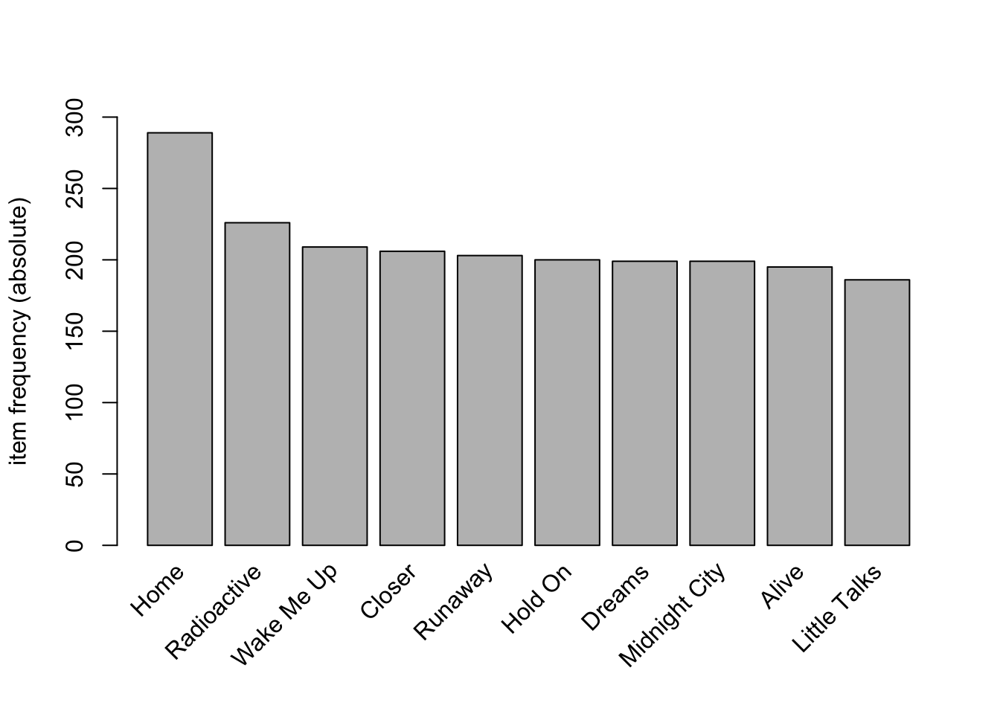
Interpretation
This graph has a relatively flat distribution, with the exception of “Home” being a peak. I predict that this is not because of an individual track named Home, but the combination of many different Homes. There is little skew, so the support can be lower.
# viz top 10 artist
itemFrequencyPlot(Trx_artists,
topN = 10,
type = 'absolute',
ylim = c(0,500)
)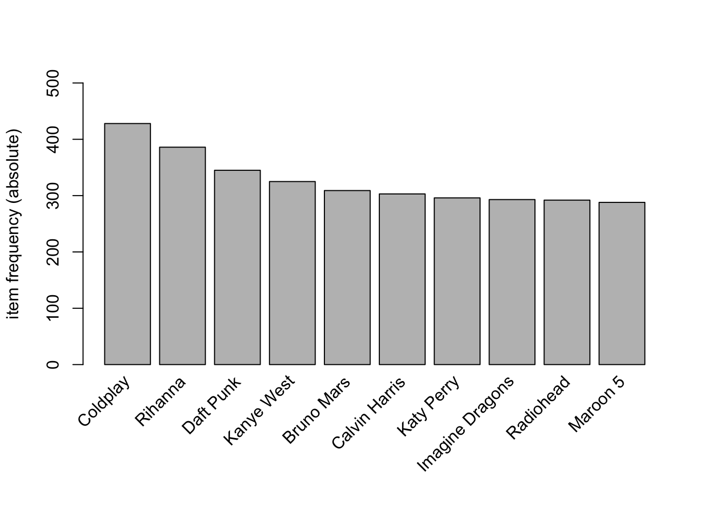
Interpretation
This graph is similar to the previous, flat distribution means popular artists don’t dominate, so support can be lower
# viz top 10 track_artists
itemFrequencyPlot(Trx_track_artist,
topN = 10,
type = 'absolute',
ylim = c(0,200)
)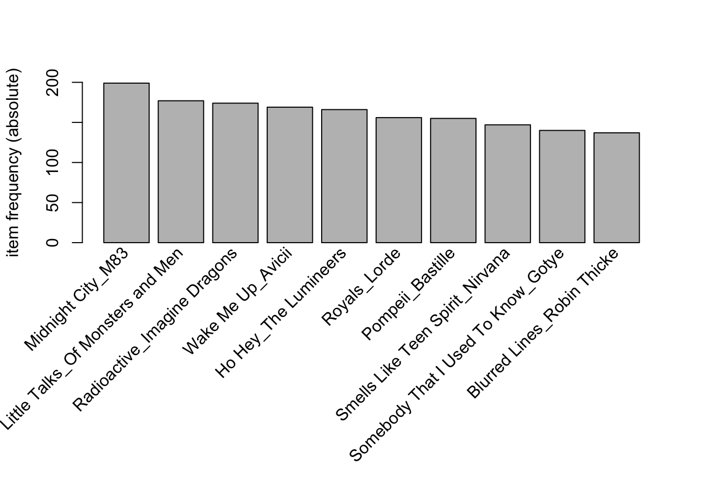
Interpretation
This graph reveals that there are some very popular songs, so higher support could be possible.
# viz top 10 users
top_listeners <- spotify %>%
count(user_id, sort = TRUE) %>%
slice_head(n = 10)
ggplot(top_listeners, aes(x = reorder(user_id, -n), y = n)) +
geom_col() +
labs(x = "User", y = "Count") +
theme(axis.text.x = element_text(angle=-30, hjust=0, vjust=0)) 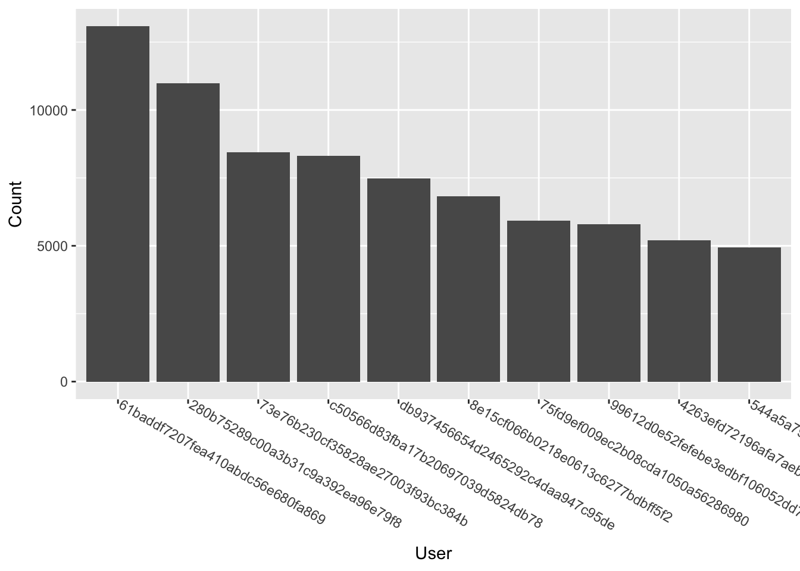
Interpretation
Finally, there is a normal distribution for these users, with the exception of the first two being considerably higher than the rest. This suggests a potential left skew.
5. Pattern Mining Method 1 - Apriori
Artists
start <- proc.time()
Rprofmem("ARules_artist_mem.out")
ARules_artist <- apriori(Trx_artists, parameter = list(supp = 0.05,
conf = 0.80,
target = 'rules',
minlen = 2,
maxlen = 4
))Apriori
Parameter specification:
confidence minval smax arem aval originalSupport maxtime support minlen
0.8 0.1 1 none FALSE TRUE 5 0.05 2
maxlen target ext
4 rules TRUE
Algorithmic control:
filter tree heap memopt load sort verbose
0.1 TRUE TRUE FALSE TRUE 2 TRUE
Absolute minimum support count: 76
set item appearances ...[0 item(s)] done [0.00s].
set transactions ...[48890 item(s), 1537 transaction(s)] done [0.06s].
sorting and recoding items ... [411 item(s)] done [0.00s].
creating transaction tree ... done [0.00s].
checking subsets of size 1 2 3 4 done [0.01s].
writing ... [151 rule(s)] done [0.00s].
creating S4 object ... done [0.00s].stop <- proc.time()
ARules_artist_time <- stop - start
Rprofmem(NULL)
ARules_artist_output <- readLines("ARules_artist_mem.out")
ARules_artist_mem <- calculate_memory_used("ARules_artist_mem.out")
ARules_artist_df <- as(ARules_artist, "data.frame")
write.csv(ARules_artist_df, "ARules_artist.csv")Justifications
For this set, I chose to have the support slightly higher because of the disproportionate popularity that some artists have, while still keeping the confidence high at 80 percent.
# Visualizations
plot(ARules_artist, jitter = 1)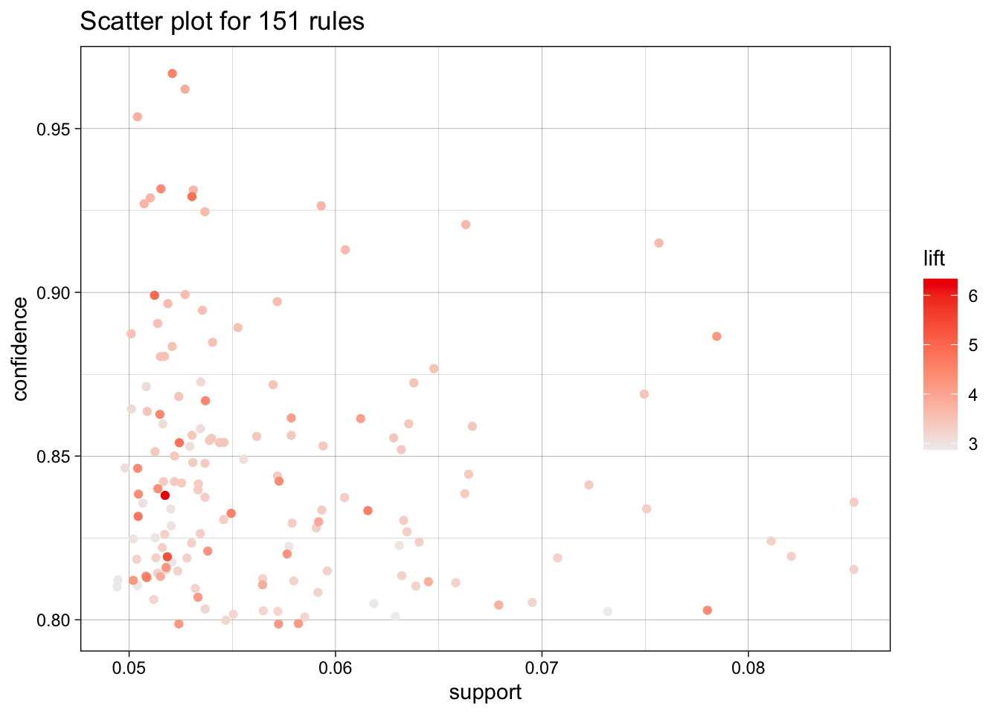
# limit to the top rules
ARules_artist_top <- head(ARules_artist, n=15, by="lift")
plot(ARules_artist_top, method="graph",
engine = "htmlwidget"
)Tracks
start <- proc.time()
Rprofmem("ARules_track_mem.out")
ARules_track <- apriori(Trx_tracks,
parameter = list(
supp = 0.03,
conf = .60,
target = 'rules',
minlen = 2,
maxlen = 4
))Apriori
Parameter specification:
confidence minval smax arem aval originalSupport maxtime support minlen
0.6 0.1 1 none FALSE TRUE 5 0.03 2
maxlen target ext
4 rules TRUE
Algorithmic control:
filter tree heap memopt load sort verbose
0.1 TRUE TRUE FALSE TRUE 2 TRUE
Absolute minimum support count: 46
set item appearances ...[0 item(s)] done [0.00s].
set transactions ...[232431 item(s), 1537 transaction(s)] done [0.27s].
sorting and recoding items ... [1075 item(s)] done [0.01s].
creating transaction tree ... done [0.00s].
checking subsets of size 1 2 3 4 done [0.01s].
writing ... [85 rule(s)] done [0.00s].
creating S4 object ... done [0.01s].stop <- proc.time()
ARules_track_time <- stop - start
Rprofmem(NULL)
ARules_track_output <- readLines("ARules_track_mem.out")
ARules_track_mem <- calculate_memory_used("ARules_track_mem.out")
ARules_track_df <- as(ARules_track, "data.frame")
write.csv(ARules_track_df, "ARules_track.csv")Justifications
For the tracks, I kept each attribute lower, since there is a strong, balanced variety. The support is at .03 to allow for more tracks, and even then, the confidence had to be lowered to 60% to get enough rules.
# Visualizations
plot(ARules_track, jitter = 1)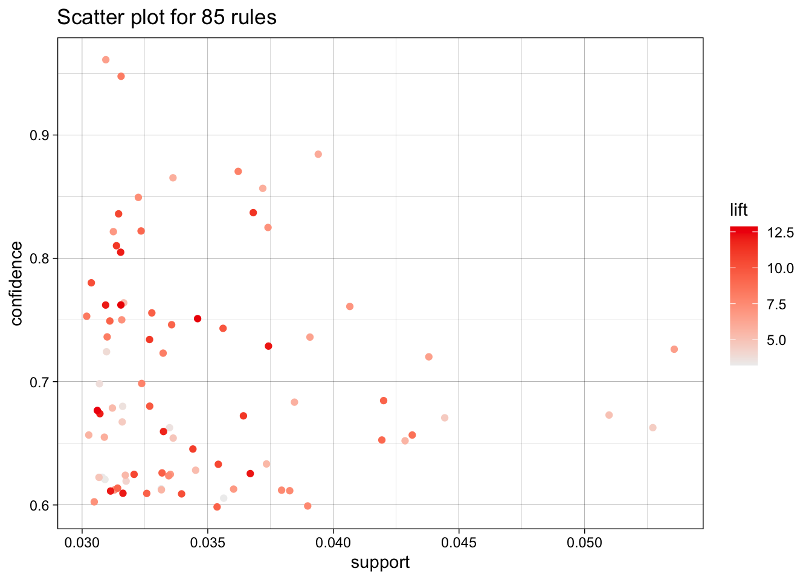
# limit to the top rules
ARules_track_top <- head(ARules_track, n=15, by="lift")
plot(ARules_track_top, method="graph",
engine = "htmlwidget"
)Tracks + Artists
start <- proc.time()
Rprofmem("ARules_ArtistTrack_mem.out")
ARules_ArtistTrack <- apriori(Trx_track_artist,
parameter = list(supp = 0.03,
conf = .60,
target = 'rules',
minlen = 2,
maxlen = 4
))Apriori
Parameter specification:
confidence minval smax arem aval originalSupport maxtime support minlen
0.6 0.1 1 none FALSE TRUE 5 0.03 2
maxlen target ext
4 rules TRUE
Algorithmic control:
filter tree heap memopt load sort verbose
0.1 TRUE TRUE FALSE TRUE 2 TRUE
Absolute minimum support count: 46
set item appearances ...[0 item(s)] done [0.00s].
set transactions ...[316558 item(s), 1537 transaction(s)] done [0.33s].
sorting and recoding items ... [533 item(s)] done [0.01s].
creating transaction tree ... done [0.00s].
checking subsets of size 1 2 3 4 done [0.00s].
writing ... [54 rule(s)] done [0.00s].
creating S4 object ... done [0.02s].stop <- proc.time()
ARules_ArtistTrack_time <- stop - start
Rprofmem(NULL)
ARules_ArtistTrack_output <- readLines("ARules_ArtistTrack_mem.out")
ARules_ArtistTrack_mem <- calculate_memory_used("ARules_ArtistTrack_mem.out")
ARules_ArtistTrack_df <- as(ARules_ArtistTrack, "data.frame")
write.csv(ARules_ArtistTrack_df, "ARules_ArtistTrack.csv")Justifications
The Tracks + Artists was nearly identical to the tracks. I initially thought there may have to be at least some minor changes when adding more buckets, but the same supply and confidence seemed to work best.
# Visualizations
plot(ARules_ArtistTrack, jitter = 1)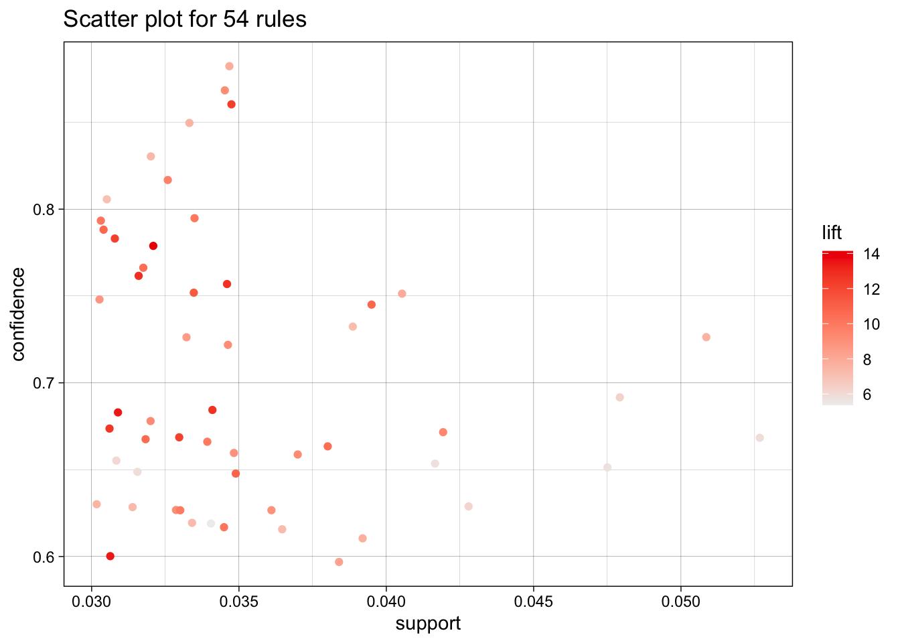
# limit to the top rules
ARules_ArtistTrack_top <- head(ARules_ArtistTrack, n=15, by="lift")
plot(ARules_ArtistTrack_top, method="graph",
engine = "htmlwidget"
)Discussion
My approach seemed to reveal that I am leaning towards finding very high lifts, potentially at the cost of getting too granular. Many of my artist patterns were closer maximum pattern length ({JAY Z, Kanye West, Lil Wayne} → {Drake}, for example), which in my opinion revealed that related artists in the same genre can be grouped with high confidence. On the other hand, many of my top track-related patterns were nearly all the minimum, 1 -> 1. These seemed to be more trivial, but it was difficult to balance with the high variety.
6. Pattern Mining Method 2 - ECLAT
Method Choice
I have chosen ECLAT over FP-Growth for a few key reasons. The main reason is the ease of use. I had a difficult time figuring out the libraries and dependencies for the FP-growth algorithm, but ECLAT I was more comfortable. The spotify data is sparse, and this algorithm can be the fastest of the three with very sparse data. However, the trade-off is that FP-Growth can handle larger datasets. I hope to have speed advantages over Apriori, although at the cost of more memory.
Artists
start <- proc.time()
Rprofmem("MRules_artist_mem.out")
MRules_artist_sets <- eclat(Trx_artists, parameter = list(
supp = 0.05, minlen = 2,
target = "frequent itemsets"
))Eclat
parameter specification:
tidLists support minlen maxlen target ext
FALSE 0.05 2 10 frequent itemsets TRUE
algorithmic control:
sparse sort verbose
7 -2 TRUE
Absolute minimum support count: 76
create itemset ...
set transactions ...[48890 item(s), 1537 transaction(s)] done [0.05s].
sorting and recoding items ... [411 item(s)] done [0.00s].
creating sparse bit matrix ... [411 row(s), 1537 column(s)] done [0.00s].
writing ... [1924 set(s)] done [0.07s].
Creating S4 object ... done [0.00s].# mine / extract rules
MRules_artist_rules <- ruleInduction(x = MRules_artist_sets,
transactions = Trx_artists,
confidence = 0.80
)
stop <- proc.time()
MRules_artist_time <- stop - start
Rprofmem(NULL)
MRules_artist_output <- readLines("MRules_artist_mem.out")
MRules_artist_mem <- calculate_memory_used("MRules_artist_mem.out")
MRules_artist_df <- as(ARules_artist, "data.frame")
write.csv(MRules_artist_df, "MRules_artist.csv")Justifications
For artists, I once again used .05 support, consistent witht he other algorithm, but I used a higher 80 percent confidence.
# Visualizations
plot(MRules_artist_rules,
colors = c("blue", "red"),
jitter = 0
)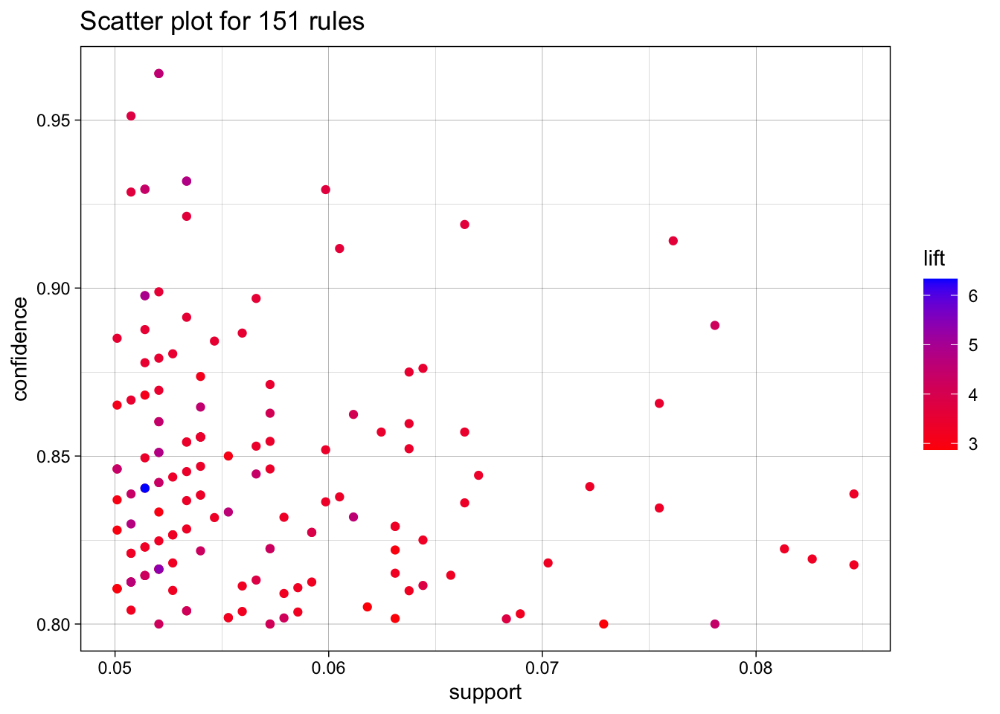
# grouped matrix
plot(MRules_artist_rules,
method = "grouped"
)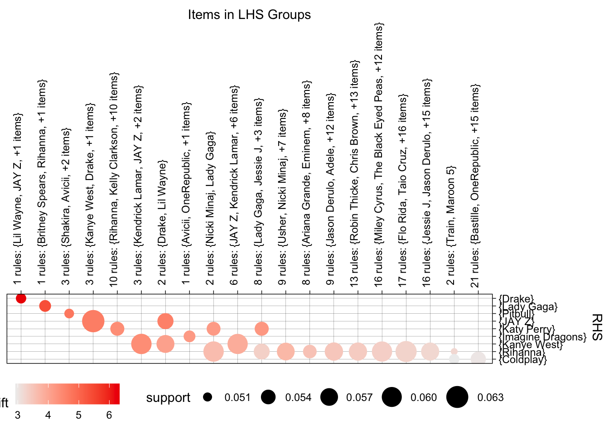
Tracks
start <- proc.time() # track process time
Rprofmem("MRules_track_mem.out") # ext must be out
MRules_track_sets <- eclat(Trx_tracks, parameter = list(
supp = 0.03, minlen = 2, maxlen = 5,
target = "frequent itemsets"
))Eclat
parameter specification:
tidLists support minlen maxlen target ext
FALSE 0.03 2 5 frequent itemsets TRUE
algorithmic control:
sparse sort verbose
7 -2 TRUE
Absolute minimum support count: 46
create itemset ...
set transactions ...[232431 item(s), 1537 transaction(s)] done [0.29s].
sorting and recoding items ... [1075 item(s)] done [0.01s].
creating sparse bit matrix ... [1075 row(s), 1537 column(s)] done [0.00s].
writing ... [791 set(s)] done [0.26s].
Creating S4 object ... done [0.00s].# mine / extract rules
MRules_track_rules <- ruleInduction(x = MRules_track_sets,
transactions = Trx_tracks,
confidence = 0.60
)
stop <- proc.time()
MRules_track_time <- stop - start
Rprofmem(NULL)
MRules_track_output <- readLines("MRules_track_mem.out")
MRules_track_mem <- calculate_memory_used("MRules_track_mem.out")
MRules_track_df <- as(ARules_track, "data.frame")
write.csv(MRules_track_df, "MRules_track.csv")Justifications
For tracks, I had the maxlen be 5, and the support be .03 to allow for more niche tracks.
# Visualizations
plot(MRules_track_rules,
colors = c("blue", "red"),
jitter = 0
)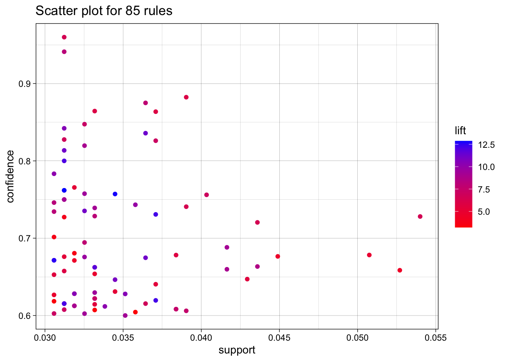
# grouped matrix
plot(MRules_track_rules,
method = "grouped"
)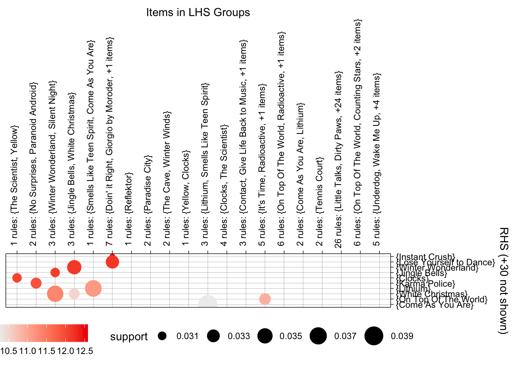
MRules_ArtistTrack
Unfortunately, after much effort, I was not able to get ruleInduction() for this set to succeed. It caused my environment to abort each time, no matter how small the set was or how much I reduced the transactions. This was odd because the transaction size was very comparable to the ‘tracks’ size. To the best of my knowledge, I believe this is an example of memory usage overload and complexity explosion. This was not entirely unexpected with choosing ECLAT over FP-Growth. Regardless, I have still determined the support to be 0.035 to allow for 47 itemsets.
# start <- proc.time() # track process time
# Rprofmem("MRules_ArtistTrack_mem.out") # ext must be out
# MRules_ArtistTrack_sets <- eclat(Trx_track_artist, parameter = list(
# supp = 0.03, minlen = 2, maxlen = 5,
# target = "frequent itemsets"
# ))
# length(MRules_ArtistTrack_sets)
# # mine / extract rules
# MRules_track_rules <- ruleInduction(x = MRules_ArtistTrack_sets,
# transactions = Trx_track_artist,
# confidence = 0.1
# )
# length(MRules_ArtistTrack_rules)
# Rprofmem(NULL)
# stop <- proc.time()
# MRules_track_output <- readLines("MRules_ArtistTrack_mem.out")
# calculate_memory_used("MRules_ArtistTrack_mem.out") # from MemoryProfiling.R
# # time elapsed
# MRules_ArtistTrack_time <- stop - start
# MRules_ArtistTrack_df <- as(ARules_MrtistTrack, "data.frame")
# write.csv(MRules_ArtistTrack_df, "MRules_ArtistTrack.csv")
# plot(MRules_ArtistTrack_rules,
# colors = c("blue", "red"),
# jitter = 0
# )
# # grouped matrix
# plot(MRules_ArtistTrack_rules,
# method = "grouped"
# )7. Method Comparison & Performance
Method
The algorithms were surprisingly similar. The top lifts were comparable
Performance
Set <- c("Apriori Artist", "Apriori Track", "Apriori ArtistTrack",
"ECLAT Artist", "ECLAT Track", "ECLAT ArtistTrack")
Speed <- c(ARules_artist_time['elapsed'], ARules_track_time['elapsed'], ARules_ArtistTrack_time['elapsed'],
MRules_artist_time['elapsed'], MRules_track_time['elapsed'], NA)
Memory <- c(ARules_artist_mem, ARules_track_mem, ARules_ArtistTrack_mem,
MRules_artist_mem, MRules_track_mem, NA)
comparison_df <- data.frame(
Set = Set,
Speed = Speed,
Memory = Memory
)
print(comparison_df) Set Speed Memory
1 Apriori Artist 0.109 5.05584
2 Apriori Track 0.340 15.01603
3 Apriori ArtistTrack 0.391 20.98589
4 ECLAT Artist 0.234 14.72002
5 ECLAT Track 1.244 57.22910
6 ECLAT ArtistTrack NA NA8. Actionable Recommendations
Artist -> Artist
- {JAY Z, Kanye West, Lil Wayne} -> {Drake}
- {Britney Spears, Katy Perry, Rihanna} -> {Lady Gaga}
Track -> Track
- {Afterlife_Arcade Fire} -> {Reflektor_Arcade Fire}
- {Paradise City_Guns N’ Roses} -> {Welcome To The Jungle_Guns N’ Roses}
Artist + Track -> Artist + Track
- {Giorgio by Moroder} -> {Lose Yourself to Dance}
- {Doin’ it Right} -> {Lose Yourself to Dance}
Top 5
- {Afterlife_Arcade Fire} -> {Reflektor_Arcade Fire}
- {Paradise City_Guns N’ Roses} -> {Welcome To The Jungle_Guns N’ Roses}
- {Giorgio by Moroder} -> {Lose Yourself to Dance}
- {JAY Z, Kanye West, Lil Wayne} → {Drake}
- {Britney Spears, Katy Perry, Rihanna} -> {Lady Gaga}
Justification
I have chosen these almost exclusively on their lift. I also included patterns that performed the best compared to the other patterns in their type. These maximize business value because of their reasonable popularity and high accuracy.
9. Top-5 Rule Presentation
| Itemset | Support | Confidence | Lift |
|---|---|---|---|
| {Afterlife_Arcade Fire} -> {Reflektor_Arcade Fire} | 0.033 | 0.781 | 14.127 |
| {Paradise City_Guns N’ Roses} -> {Welcome To The Jungle_Guns N’ Roses} | 0.031 | 0.681 | 13.422 |
| {Giorgio by Moroder} -> {Lose Yourself to Dance} | 0.031 | 0.762 | 12.869 |
| {JAY Z, Kanye West, Lil Wayne} -> {Drake} | 0.051 | 0.840 | 6.332 |
| {Britney Spears, Katy Perry, Rihanna} -> {Lady Gaga} | 0.052 | 0.816 | 5.385 |
Pitch
The methods found in this research have a great possibility of being highly integrated into the Spotify experience. These patterns are just 5 of the many statistically accurate recommendations that Spotify would be able to utilize to elevate the auto-generated queue. It is extremely common for users to come to the end of an album or queue, and these patterns can determine what is next. These are not necessarily “expand your taste”-based recommendations, but more “we guarantee you won’t be mad if we play this” recommendations.
10. Reflection & Next Steps
Preferred Algorithm
My preferred algorithm is the Apriori method. The breadth-first search is very understandable. It performed better with speed and memory, which was a pleasant surprise. Even though it has the tendency to be slow with some data, it was not with this data. I also spent less time debugging it.
Limitations
The reality is that no 2 people’s tastes are the same, the near endless amount of songs and artists can make it so that the data is too sparse. A limitation I experienced is how much of a factor the support is. A change of half a percent can include/exclude a substantial number of patterns that ultimately shape the top performers. Popularity is another limitation, logically, but not necessarily practically. Algorithms are likely to pattern the most popular tracks, but this is probably a good thing in business.
Monitoring Schedule
Each week, new music comes out, each month, there are new hits, and each season brings new seasonal songs. Music is a fast-moving space, which means remaining will be frequent. Daily monitoring for volatile tracks. Weekly monitoring for new releases (affected by charts). Monthly monitoring of people’s tastes. Lastly, each new season brings new patterns, for example, {White Christmas -> Winter Wonderland} as seen in these results.